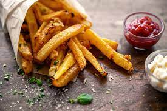

Papas Fritas
Receta de papas fritas caseras

Ingredientes
- 3 o 4 papas (300gr)
- Aceite
- Sal
Elaboración (Pasos)
- Pelar las papas
- Cortarlas en bastones
- Calentar aceite en una sarten
- Cocinar hasta que esten doradas
- Removerlas del aceite y salar al gusto
- Esperar que se enfrien para que no se queme
___________________________